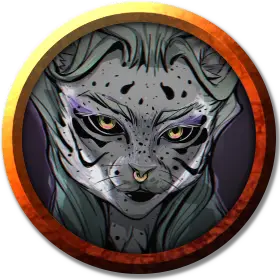

Три Серьги
Three Earrings
Средний Гуманоид (Табакси), нейтрально-злой, именной НИП

Класс Доспеха 15 (проклепанная кожа)
Хиты 65 (10к8 + 20)
Скорость 30 футов, лазая 20 футов
| мод | спас | ||
|---|---|---|---|
| СИЛ | 15 | +2 | +4 |
| ЛОВ | 16 | +3 | +5 |
| ТЕЛ | 14 | +2 | +2 |
| мод | спас | ||
|---|---|---|---|
| ИНТ | 14 | +2 | +2 |
| МДР | 11 | +0 | +2 |
| ХАР | 14 | +2 | +2 |
Чувства тёмное зрение 60 футов, пассивное Восприятие 10
Языки Общий, Сахуагинский
Опасность 2 (450 опыта)
Бонус мастерства +2
Среда обитания Арктика, Город, Лес, Побережье, Пустыня, Холмы
Особенности
Кошачье проворство. Когда Три серьги двигается в бою в свой ход, она может удвоить свою скорость до конца хода. Использовав эту особенность, она не может использовать её снова, до тех пор, пока она не переместится на 0 футов за один из своих ходов.
Действия
Мультиатака. Три Серьги совершает три рукопашные атаки: две скимитаром, и одну кинжалом. Вместо этого Три Серьги может совершить две дальнобойные атаки кинжалами.
Когти. . Рукопашная атака оружием: +4 к попаданию, досягаемость 5 фт., одна цель. Попадание: 2 (1к4) рубящего урона.
Скимитар. . Рукопашная атака оружием: +5 к попаданию, досягаемость 5 футов, одна цель. Попадание: 6 (1к6 + 3) рубящего урона.
Кинжал. . Рукопашная или дальнобойная атака оружием: +5 к попаданию, досягаемость 5 футов или дистанция 20/60 футов, одна цель. Попадание: 5 (1к4 + 3) колющего урона.
Реакции
Парирование. Три серьги добавляет 2 к КД против одной рукопашной атаки, которая должна попасть по ней. Для этого Три серьги должна видеть атакующего, и должна использовать рукопашное оружие.
Описание
Эта бледная, пятнистая нейтрально-злая капитан бандитов - низкоранговый член пиратов Разгула. Она привела свой корабль в деревню Пальма Флора, потому как ей сообщили, что местное племя сахуагинов обнаружило необычное сокровище. Три Серьги справедливо предположила, что они собираются напасть на деревню, и она намеревалась быть там, чтобы разграбить руины после нападения. Она не ожидала, что остров Флора пойдет ко дну.